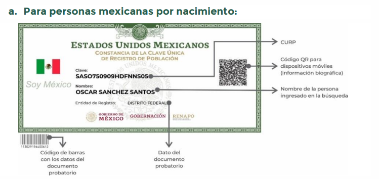

¿Qué es la CURP?
La CURP es la Clave Única de Registro de Población. Está formada por 18 caracteres alfanuméricos y se utiliza para identificar de manera individual a una persona dentro de distintos registros y trámites.
Para un estudiante de Programación Estructurada, la CURP resulta especialmente útil porque obliga a trabajar con cadenas, posiciones, validaciones, fechas, selección, búsqueda de caracteres, tablas de equivalencias y reglas especiales.
1 · ¿Qué es y para qué sirve?
Identificación
La CURP permite identificar de forma individual a una persona en registros administrativos y bases de datos.
Trámites
Se utiliza en trámites escolares, de salud, empleo, gobierno, servicios y otros registros.
18 caracteres
Combina letras y números derivados de nombres, apellidos, fecha de nacimiento, sexo, entidad federativa y caracteres de control.
Uso didáctico
Es un caso práctico para aprender a dividir un problema grande en varias funciones y reglas pequeñas.
2 · Estructura general de los 18 caracteres
Una forma útil de estudiarla consiste en dividirla por bloques. Cada bloque tiene un origen distinto.
Iniciales y vocal interna obtenidas del nombre y apellidos.
Fecha de nacimiento en formato AAMMDD.
Sexo de la persona: H o M.
Código correspondiente al lugar de nacimiento.
Primeras consonantes internas de apellidos y nombre.
Carácter diferenciador relacionado con homonimia y siglo.
Dígito verificador.


3 · Generación de los caracteres 1 al 4
Los primeros cuatro caracteres se obtienen principalmente del primer apellido, segundo apellido y nombre. Ésta es una de las partes que requiere mayor cuidado porque existen reglas y excepciones.
| Posición | Se obtiene de | Regla general |
|---|---|---|
| 1 | Primer apellido | Primera letra del primer apellido. |
| 2 | Primer apellido | Primera vocal interna, es decir, la primera vocal después de la inicial. |
| 3 | Segundo apellido | Primera letra del segundo apellido. |
| 4 | Nombre | Primera letra del nombre significativo. |
Para Salgado Briseño Concepción: S de Salgado + A como primera vocal interna + B de Briseño + C de Concepción = SABC.
4 · Generación de los caracteres 5 al 10 · Fecha de nacimiento
Estas seis posiciones representan la fecha de nacimiento usando dos dígitos para el año, dos para el mes y dos para el día:
Año
Se toman los últimos dos dígitos del año.
1990 → 90
Mes
Siempre utiliza dos posiciones.
Junio → 06
Día
También utiliza dos posiciones.
Día 15 → 15
15 de febrero de 1990 → 900215
5 · Caracteres 11, 12 y 13 · Sexo y entidad de nacimiento
Carácter 11 · Sexo
Se utiliza una sola letra:
- H = Hombre
- M = Mujer
El valor debe corresponder con la información del documento probatorio.
Caracteres 12 y 13 · Entidad federativa
Se utiliza un código de dos letras correspondiente al lugar de nacimiento. Para un programa conviene manejar este catálogo como una tabla de búsqueda.
Ejemplos: BC = Baja California, NL = Nuevo León, YN = Yucatán, NE = nacido en el extranjero.
6 · Caracteres 14 al 16 · Consonantes internas
Se utiliza la primera consonante interna que aparece después de la inicial de cada palabra significativa. No se toma nuevamente la inicial.
| Posición | Origen | Qué se busca |
|---|---|---|
| 14 | Primer apellido | Primera consonante interna. |
| 15 | Segundo apellido | Primera consonante interna. |
| 16 | Nombre significativo | Primera consonante interna. |
Salgado → L, Briseño → R, Concepción → N. Resultado: LRN.
7 · Caracteres 17 y 18 · Homonimia, siglo y verificación
Carácter 17
Es un carácter diferenciador utilizado para distinguir claves que pudieran coincidir en sus primeros 16 caracteres y también está relacionado con el siglo de nacimiento.
No debe inventarse libremente; forma parte de las reglas de asignación administrativa.
Carácter 18
Es el dígito verificador. Sirve para comprobar que la estructura alfanumérica de la CURP mantiene consistencia con el procedimiento de validación correspondiente.
Para esta página interesa entender su función, no implementar el cálculo en código.
8 · Excepciones y reglas especiales
María y José
Si María o José aparecen acompañados de otro nombre, puede utilizarse el siguiente nombre significativo para ciertas posiciones.
Sin segundo apellido
Cuando falta el segundo apellido, se utiliza una X en la posición correspondiente.
Sin vocal o consonante interna
Si no existe una vocal o consonante interna válida, también se utiliza X.
Partículas
En nombres y apellidos compuestos se deben considerar reglas para partículas, preposiciones y conjunciones antes de elegir letras internas.
Palabras inconvenientes
Si los primeros cuatro caracteres forman una palabra inconveniente, se aplica una sustitución para evitarla.
Normalización
Para procesar nombres conviene trabajar en mayúsculas y controlar acentos, caracteres especiales y la letra Ñ conforme a las reglas que se definan.
9 · Proceso completo para construir una CURP de forma didáctica
Nombre, apellidos, fecha, sexo y lugar de nacimiento.
Preparar nombres y apellidos para aplicar las reglas.
Iniciales y vocal interna.
Fecha, sexo y entidad.
Consonantes internas.
Caracteres de control y verificación.
10 · Ejemplos de análisis
| Nombre | Datos | Ejemplo didáctico | Qué practicar |
|---|---|---|---|
| Salgado Briseño Concepción | 26/06/1956 · Mujer · DF | SABC560626MDFLRN09 | Separar los 18 caracteres por bloques. |
| Sánchez Santos Oscar | 05/09/1970 · Hombre · DF | SASO700905HDFNNS00 | Iniciales y consonantes internas. |
| Flores Fermán Jovani Jair | 06/11/2001 · Hombre · Puebla | FOFJ011106HPLLRVA1 | Fecha posterior al año 2000. |
11 · Consulta del Instructivo Normativo
Para ampliar las reglas, procedimientos y casos especiales de asignación, consulta el documento normativo correspondiente.
Consultar instructivo Publicación oficial12 · Práctica de repaso
1. Primeros cuatro caracteres
Para una persona llamada María Fernanda López Ruiz, identifica qué elementos utilizarías para formar los primeros cuatro caracteres.
Ver orientación
Analiza inicial y vocal interna del primer apellido, inicial del segundo apellido y aplica la regla de María/José para elegir el nombre significativo.
2. Fecha
¿Cómo representarías en las posiciones 5 a 10 la fecha 29/02/2004?
Ver respuesta
040229.
3. Entidad
Si la persona nació en Baja California, ¿qué código utilizarías para las posiciones 12 y 13?
Ver respuesta
BC.
4. Consonante inexistente
¿Qué carácter utilizarías si no existe una consonante interna válida?
Ver respuesta
X.
5. Análisis completo
Toma el ejemplo SABC560626MDFLRN09 y separa sus siete bloques: 1–4, 5–10, 11, 12–13, 14–16, 17 y 18.
Ver respuesta
SABC | 560626 | M | DF | LRN | 0 | 9
Para entender una CURP conviene verla como una cadena de 18 posiciones: las primeras se forman con nombres y apellidos, después se incorpora la fecha, el sexo, la entidad de nacimiento, consonantes internas y finalmente caracteres de control. El reto de programación está en aplicar correctamente las reglas y validar cada dato antes de formar la cadena final.